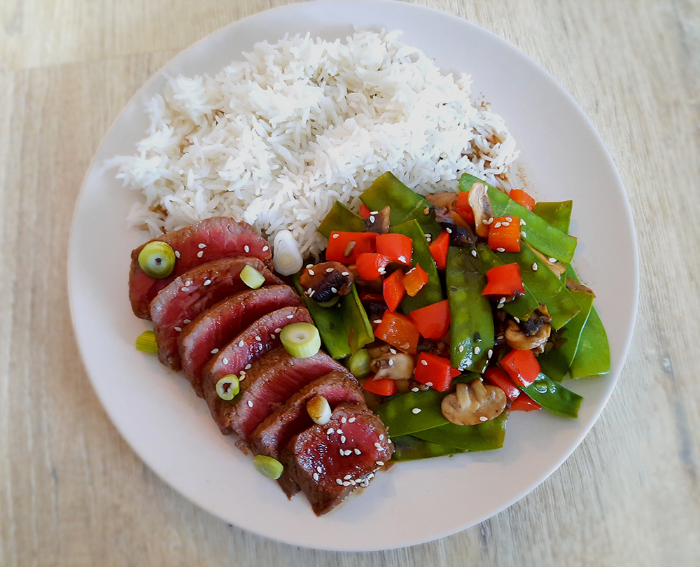

sri lankaanse pompoen curry

marokkaanse tajine

indiase tikka masala

gnocchi

coq au vin

kokossoep

vietnamese pannenkoeken (banh xeo)

hawaiiaanse poké bowl

indonesische kippensoep (soto ajam)

japanse beef teriyaki
In het traditioneel recept wordt mirin, oftewel rijstwijn gebruikt maar ook sherry werkt heel goed!

Bereidingsduur: 60 minuten
Aantal personen: 3
Ingrediënten:
375 gram biefstuk
200 gram basmatirijst
250 gram peultjes
1 paprika
250 gram champignons
3 lente uitjes
3 handjes sesamzaadjes
6 eetlepels sojasaus
8 eetlepels sherry
4 eetlepels bruine suiker
375 gram biefstuk
200 gram basmatirijst
250 gram peultjes
1 paprika
250 gram champignons
3 lente uitjes
3 handjes sesamzaadjes
6 eetlepels sojasaus
8 eetlepels sherry
4 eetlepels bruine suiker
Instructies:
1. Meng 4 eetlepels sherry, 3 eetlepels sojasaus, 2 eetlepels suiker en 1 eetlepel olie in een grote kom. Meng de biefstuk door deze marinade en laat dit 30 minuten afgedekt staan.
2. Snijd ondertussen de champignons in schijfjes, de paprika in kleine stukjes, de lente uitjes in ringetjes en snijd de puntjes van de peultjes eraf. Halveer deze eventueel.
3. Kook de rijst zoals aangegeven op het pakje.
4. Bak het vlees in een grote pan in 5 minuten tot het aan alle kanten is dichtgeschroeid. Haal daarna van het vuur en wikkel in aluminiumfolie zodat de biefstukken warm blijven.
5. Doe wat olie in een grote pan en roerbak alle groenten behalve de lente ui tot deze gaar zijn en voeg wat sojasaus en een klein beetje water toe.
6. Neem een kleinere pan voor de saus. Voeg 4 eetlepels sherry, 3 eetlepels sojasaus en 2 eetlepels suiker toe en roer goed. Zet het vuur laag en blijf roeren tot het stroperig wordt.
7. Snijd de biefstuk in plakken. Verdeel de rijst en groenten over twee borden en leg hierop de biefstuk. Strooi de sesamzaadjes en de lente uitjes hierover en verdeel de saus over de borden.
1. Meng 4 eetlepels sherry, 3 eetlepels sojasaus, 2 eetlepels suiker en 1 eetlepel olie in een grote kom. Meng de biefstuk door deze marinade en laat dit 30 minuten afgedekt staan.
2. Snijd ondertussen de champignons in schijfjes, de paprika in kleine stukjes, de lente uitjes in ringetjes en snijd de puntjes van de peultjes eraf. Halveer deze eventueel.
3. Kook de rijst zoals aangegeven op het pakje.
4. Bak het vlees in een grote pan in 5 minuten tot het aan alle kanten is dichtgeschroeid. Haal daarna van het vuur en wikkel in aluminiumfolie zodat de biefstukken warm blijven.
5. Doe wat olie in een grote pan en roerbak alle groenten behalve de lente ui tot deze gaar zijn en voeg wat sojasaus en een klein beetje water toe.
6. Neem een kleinere pan voor de saus. Voeg 4 eetlepels sherry, 3 eetlepels sojasaus en 2 eetlepels suiker toe en roer goed. Zet het vuur laag en blijf roeren tot het stroperig wordt.
7. Snijd de biefstuk in plakken. Verdeel de rijst en groenten over twee borden en leg hierop de biefstuk. Strooi de sesamzaadjes en de lente uitjes hierover en verdeel de saus over de borden.